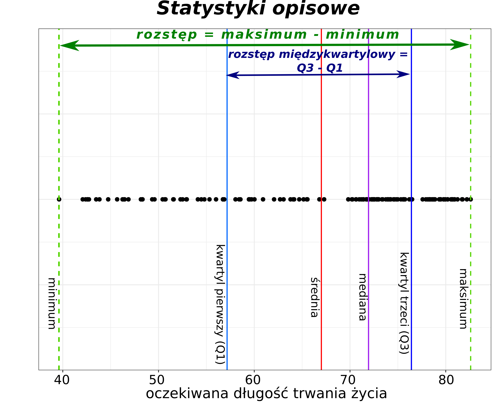
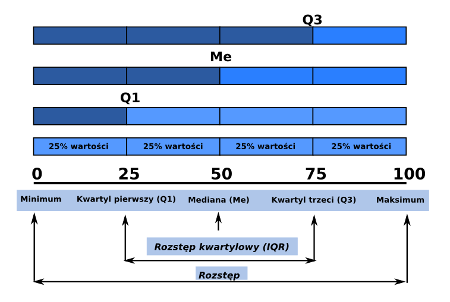

5 Statystyki opisowe
Statystyki opisowe wykorzystuje się do przedstawienia ogólnej charakterystyki danych.
Statystyki opisowe dzielimy na:
Miary położenia - określają przeciętny poziom oraz rozmieszczenie wartości zmiennej:
- Miary przeciętne - np. średnia arytemtyczna - charakteryzują średni lub typowy poziom wartości zmiennej; mówią zatem o przeciętnym poziomie rozważanej zmiennej;
- Wartość modalna - wartość najczęściej występująca w zbiorze danych;
- Kwantyle - dzielą zbiorowość na określone części, np. 4, 10, 100 części.
Miary rozrzutu - określają granice zmienności danej zmiennej:
- rozstęp;
- rozstęp kwartylowy;
- odchylenie standardowe.
Miary asymetrii i koncentracji.
- skośność;
- kurtoza.

library(gapminder)
library(dplyr)data('gapminder', package ='gapminder')
dane2007 <- filter(gapminder, year==2007)5.1 Podstawowe statystyki
Zestaw podstawowych statystyk opisowych obliczany jest za pomocą funkcji summary(). Funkcja ta oblicza wartość minimalną, wartość maksymalną, pierwszy i trzeci kwartyl, medianę oraz średnią.
summary(dane2007) country continent year lifeExp
Afghanistan: 1 Africa :52 Min. :2007 Min. :39.61
Albania : 1 Americas:25 1st Qu.:2007 1st Qu.:57.16
Algeria : 1 Asia :33 Median :2007 Median :71.94
Angola : 1 Europe :30 Mean :2007 Mean :67.01
Argentina : 1 Oceania : 2 3rd Qu.:2007 3rd Qu.:76.41
Australia : 1 Max. :2007 Max. :82.60
(Other) :136
pop gdpPercap
Min. :1.996e+05 Min. : 277.6
1st Qu.:4.508e+06 1st Qu.: 1624.8
Median :1.052e+07 Median : 6124.4
Mean :4.402e+07 Mean :11680.1
3rd Qu.:3.121e+07 3rd Qu.:18008.8
Max. :1.319e+09 Max. :49357.2
5.2 Statystyki opisowe: Miary położenia
5.2.1 Średnia arytmetyczna
- Obliczana jest jako iloraz sumy liczb i ilości tych liczb.
- Jest najczęściej używaną miarą charakteryzującą rozkład cechy
- Wady: czuła na wartości odstające
srednia_lifeExp <- mean(dane2007$lifeExp)
srednia_lifeExp [1] 67.00742Obliczyć średnią wartość dla PKB (gdpPercap) w 2007 roku.
Rozwiązanie:
mean(dane2007$gdpPercap) Ile wynosiła średnia oczekiwana długość trwania życia w Azji w roku 2002?
Rozwiązanie:
asia2002 <- filter(gapminder, continent == 'Asia' & year == 2002)
mean(asia2002$lifeExp)5.2.2 Średnia ważona
srednia_w_lifeExp <- weighted.mean(dane2007$lifeExp, dane2007$pop)5.2.3 Średnia harmoniczna
harmonic_mean = function(x){
1 / mean(1 / x)
}rzeka = c(6, 3.2) #km/h
harmonic_mean(rzeka)[1] 4.1739135.2.4 Średnia geometryczna
geometric_mean = function(x){
n = length(x)
prod(x) ^ (1 / n)
}zmiana <- c(1.026392, 1.011959)
geometric_mean(zmiana)[1] 1.019155.2.5 Kwantyle
Kwantyle to wartości cechy, które dzielą analizowany zbiór danych na określone części pod względem liczby jednostek. Części te pozostają w stosunku do siebie w określonych proporcjach:
- Kwartyle - podział na 4 części:
- Kwartyl pierwszy (Q1)
- Mediana - kwartyl drugi
- Kwartyl trzeci (Q3)
- Decyle - podzial na 10 części
- Percentyle - podział na 100 częsci
Funkcja quantile() oblicza dowolną wartość kwantyli. Argument probs pozwala na zdefyniowanie dowolnych wartości, które mają zostać wyliczone. Argument ten przyjmuje wartości z przedziału od 0 do 1.

Kwartyle
Funkcja quantile() domyślnie zwraca wartośći kwartyli.
kwartyle <- quantile(dane2007$lifeExp)
kwartyle 0% 25% 50% 75% 100%
39.61300 57.16025 71.93550 76.41325 82.60300 Kwartyle są także obliczane przez funkcję summary(), która dodatkowo zwraca także wartości minimalną, maksymalną oraz średnią.
Decyle
W poniższym przykładzie seq(0,1,0.1) zwraca sekwencję wartości od 0 do 1 z krokiem co 0.1. Odpowiada to podziałowi danych na 10 równych części.
decyle <- quantile(dane2007$lifeExp, probs = seq(0, 1, 0.1))
decyle 0% 10% 20% 30% 40% 50% 60% 70% 80% 90%
39.6130 48.1734 54.1814 59.8127 67.0006 71.9355 73.2048 75.4719 78.2668 79.8223
100%
82.6030 Percentyle
W poniższym przykładzie zbiór zostanie podzielony na 100 równych części.
percentyle <- quantile(dane2007$lifeExp, probs = seq(0, 1, 0.01))
head(percentyle, 10) 0% 1% 2% 3% 4% 5% 6% 7%
39.61300 42.20582 42.53488 42.62397 43.21484 43.87365 45.17202 46.16868
8% 9%
46.40872 46.73593 Dowolne wartości kwantyli
W poniższym przykładzie zostanie wyliczony 5 oraz 95 percentyl.
q <- quantile(dane2007$lifeExp, probs = c(0.05, 0.95))
q 5% 95%
43.87365 80.74060 Obliczyć decyle dla gdpPercap dla danych z 2007 roku.
Rozwiązanie:
quantile(dane2007$gdpPercap, probs = seq(0, 1, 0.1))Obliczyć pierwszy i trzeci kwartyl dla oczekiwanej długości trwania życia w Afryce w 2002 roku.
Rozwiązanie:
africa2002 <- filter(gapminder, continent == 'Africa' & year == 2002)
quantile(africa2002$lifeExp, probs = c(0.25, 0.75))Mediana
Mediana to wartość, która dzieli zbiór danych na 2 równe części. Mediana obliczana jest przez funkcję median().
median_lifeExp <- median(dane2007$lifeExp)
median_lifeExp [1] 71.9355Obliczyć medianę dla gdpPercap dla danych z 2007 roku.
Rozwiązanie:
median(dane2007$gdpPercap) Ile wynosiła mediana oczekiwanej długości trwania życia w Afryce w 1952 roku?
Rozwiązanie:
africa1952 <- filter(gapminder, continent == 'Africa' & year == 1952)
median(africa1952$lifeExp) Mediana a średnia arytmetyczna
- dla rozkładu symetrycznego mediana oraz średnia będą równe.
- mediana jest lepszą miarą w przypadku rozkładów skośnych.
- średnia jest bardziej czuła na wartości odstające.
- średnia jest bardziej przydatna dla małych zbiorów danych.
Podsumowanie: Warto podawać obie wartości.
5.2.6 Wartość modalna
- wartość cechy, która w zbiorze danych występuje najczęściej. W R nie ma wbudowanej funkcji do obliczania tej statystyki.
5.3 Statystyki opisowe: Miary rozrzutu
5.3.1 Minimum i maksimum
min_lifeExp <- min(dane2007$lifeExp)
min_lifeExp[1] 39.613max_lifeExp <- max(dane2007$lifeExp)
max_lifeExp[1] 82.603range(dane2007$lifeExp)[1] 39.613 82.603Ile wynosiła najmniejsza i największa oczekiwana długość trwania życia w Afryce w roku 1952?
Rozwiązanie:
africa1952 <- filter(gapminder, continent == 'Africa' & year == 1952)
range(africa1952$lifeExp)Oblicz zakres oczekiwanej długości trwania życia w Polsce w latach 1952-2007?
Rozwiązanie:
# Rozwiazanie 1
pl <- filter(gapminder, country == 'Poland')
range(pl$lifeExp)
# Rozwiazanie 2
min(pl$lifeExp)
max(pl$lifeExp)W jakim zakresie zmieniała się oczekiwana długość trwania życia w 2002 roku w krajach azjatyckich z PKB (gpdPercap) przekraczającym 25000?
Rozwiązanie:
asia2002 <- filter(gapminder, year == 2002 & continent == 'Asia' & gdpPercap > 25000)
range(asia2002$lifeExp)5.3.2 Rozstęp
- najprostsza miara zmienności
- różnica między wartości maksymalną oraz wartością minimalną
- wrażliwy na wartości odstające
range_lifeExp <- max(dane2007$lifeExp) - min(dane2007$lifeExp)Uwaga! W R funkcja range() zwraca wektor składający się z dwóch wartości - minimalnej oraz maksymalnej, a nie rostęp (różnicę między tymi wartościami).
Obliczyć rozstęp dla gdpPercap dla danych z 2007 roku.
Rozwiązanie:
max(dane2007$gdpPercap) - min(dane2007$gdpPercap)5.3.3 Rozstęp kwartylowy
- różnica między kwartylem trzecim i kwartylem pierwszym
IQR_lifeExp <- IQR(dane2007$lifeExp)Obliczyć rozstęp kwartylowy dla gdpPercap dla danych z 2007 roku.
Rozwiązanie:
IQR(dane2007$gdpPercap) Obliczyć rozstęp kwartylowy dla oczekiwanej długości trwania życia w Afryce
Rozwiązanie:
africa <- filter(gapminder, continent == 'Africa')
IQR(africa$lifeExp)5.3.4 Wariancja
- wariancja oraz odchylenie standardowe mierzą jak daleko dane rozchodzą się od średniej.
var_lifeExp <- var(dane2007$lifeExp)5.3.5 Odchylenie standardowe
obliczane jako pierwiastek z wariancji
obok średniej jest jednym z najczęściej stosowanych parametrów statystycznych:
- jest obliczane ze wszystkich obserwacji w zbiorze danych
- im zbiór danych jest bardziej zróżnicowany tym większe odchylenie standardowe.
małe odchylenie standardowe - wartości są blisko średniej
duże odchylenie standardowe - wartości są daleko od średniej.
sd_lifeExp <- sd(dane2007$lifeExp)
sd_lifeExp [1] 12.07302Jakie była wartość odchylenia standardowego dla gdpPercap w 2007 roku?
Rozwiązanie:
sd(dane2007$gdpPercap)5.4 Opisywanie danych nominalnych
5.4.1 Częstość
table(dane2007$continent)
Africa Americas Asia Europe Oceania
52 25 33 30 2 table(dane2007$continent) / length(dane2007$continent) * 100
Africa Americas Asia Europe Oceania
36.619718 17.605634 23.239437 21.126761 1.408451 Ile krajów było w 1952 roku na poszczególnych kontynentach?
Rozwiązanie:
dane1952 <- filter(gapminder, year == 1952)
table(dane1952$continent)5.5 Statystykiw grupach
Pakiet dplyr pozwala także na obliczenie statystyk według grup, np. średnia długość trwania życia na poszczególnych kontynentach.
- Średnia oczekiwana długość życia w 2007 roku według kontynentów.
Obliczenie statystyk w grupach wymaga najpierw pogrupowania danych (funkcja group_by()).
gapminder2007 <- filter(gapminder, year == 2007)
by_continent <- group_by(gapminder2007, continent)
smr_by_continent <- summarize(by_continent,
mean_le = mean(lifeExp))
smr_by_continent# A tibble: 5 × 2
continent mean_le
<fct> <dbl>
1 Africa 54.8
2 Americas 73.6
3 Asia 70.7
4 Europe 77.6
5 Oceania 80.7Powyższy kod można zapisać także z wykorzystaniem operatora łączącego %>%
mean_by_continent <- gapminder %>%
filter(year == 2007) %>%
group_by(continent) %>%
summarize(mean_le = mean(lifeExp))
mean_by_continent# A tibble: 5 × 2
continent mean_le
<fct> <dbl>
1 Africa 54.8
2 Americas 73.6
3 Asia 70.7
4 Europe 77.6
5 Oceania 80.7Oblicz średnią oczekiwaną długość trwania życia w poszczególnych latach. Posortuj wyniki od największej do najmniejszej wartości.
Rozwiązanie:
ex15 <- gapminder %>%
group_by(year) %>%
summarize(mean_le = mean(lifeExp)) %>%
arrange(desc(mean_le))
ex15Jak zmieniało się w poszczególnych latach średnie PKB w Afryce?
Rozwiązanie:
ex16 <- gapminder %>%
filter(continent == 'Africa') %>%
group_by(year) %>%
summarize(mean_gpd = mean(gdpPercap))
ex16- Średnia oczekiwana długość życia w podziale na kontynenty oraz lata.
by_continent_year <- group_by(gapminder, continent, year)
smr_by_continent_year <- summarize(by_continent_year,
mean_le = mean(lifeExp))`summarise()` has grouped output by 'continent'. You can override using the
`.groups` argument.smr_by_continent_year# A tibble: 60 × 3
# Groups: continent [5]
continent year mean_le
<fct> <int> <dbl>
1 Africa 1952 39.1
2 Africa 1957 41.3
3 Africa 1962 43.3
4 Africa 1967 45.3
5 Africa 1972 47.5
6 Africa 1977 49.6
7 Africa 1982 51.6
8 Africa 1987 53.3
9 Africa 1992 53.6
10 Africa 1997 53.6
# ℹ 50 more rowsOblicz średnią wartość gdpPercap w 2007 roku w podziale na kontynenty.
Rozwiązanie:
ex17 <- gapminder %>%
filter(year == 2007) %>%
group_by(continent) %>%
summarize(mean_gpd = mean(gdpPercap))
ex17Oblicz średnią wartość gdpPercap w podziale na poszczególne kontynenty oraz lata. Przedstaw wynik w “układzie szerokim” - każdy wiersz to określony kontynent, a każda kolumna to określony rok.
Rozwiązanie:
ex18 <- gapminder %>%
group_by(continent, year) %>%
summarize(mean_gdp = mean(gdpPercap)) %>%
pivot_wider(names_from = year, values_from = mean_gdp)
ex185.6 Braki danych
W R braki danych zazwyczaj kodowane są jako NA - Not Available.
NA + 1 [1] NA2*NA [1] NAx = c(1,2,NA)
mean(x)[1] NAmean(x, na.rm = TRUE)[1] 1.55.7 Ćwiczenie
Wykorzystując zbiór danych gapminder sformułuj dwa pytania i odpowiedz na nie.